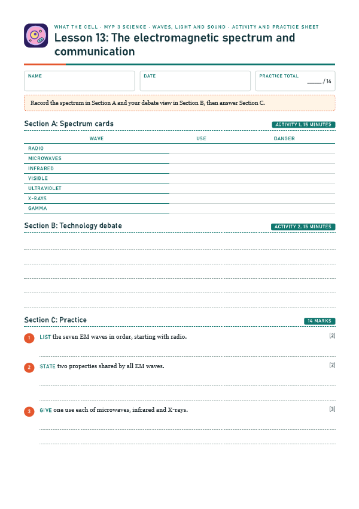

By the end of the lesson you can
- List the seven types of electromagnetic wave in order
- Describe a use of each
- Compare frequency, wavelength and energy across the spectrum
- Discuss the impact of communication technology
Keys: arrows or a presentation clicker move the slides, F for full screen. Slides with a red dot have a video or simulation.
Videos (all 5 minutes or less)
- 3:02
Electromagnetic Waves
FuseSchool. While you watch: What do all EM waves have in common? Slide 9.
Simulations
- Lab
Print and practise

Activity and practice sheet
Used in the lesson’s activities, with practice questions. Your teacher has the answers.
Download (PDF)Lesson 13 slides
All 16 slides in one file, to read again or print. The video buttons on the slides open YouTube.
Download the slides (PDF)Revising? The Revision tab on the unit page has the unit notes and review.
Class activity pack
Everything to print for the lesson’s activities: picture cards, sorting mats, station cards with their kit lists, and the teacher’s set-up notes. Print it before class.
Download the activity pack (PDF)Notes: The electromagnetic spectrum
electromagnetic spectrum
The family of transverse waves from radio to gamma. For example: all travel at the speed of light.
radio waves
Longest wavelength; carry radio and TV. For example: broadcasting.
microwaves
Heat food; carry phone and Wi-Fi signals. For example: mobile phones.
infrared
Felt as heat; used in remotes and thermal cameras. For example: night vision.
ultraviolet
Causes sunburn; used to sterilise. For example: the Sun.
X-rays
Pass through soft tissue; show bones. For example: hospital scans.
signal
Information carried by a wave, such as a phone call. For example: microwaves to a phone mast.
Key words
| electromagnetic spectrum | radio to gamma |
|---|---|
| microwaves | phones and cooking |
| infrared | heat and remotes |
| ultraviolet | sunburn and sterilising |
| X-rays | show bones |